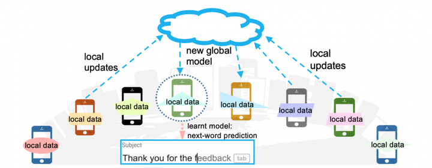
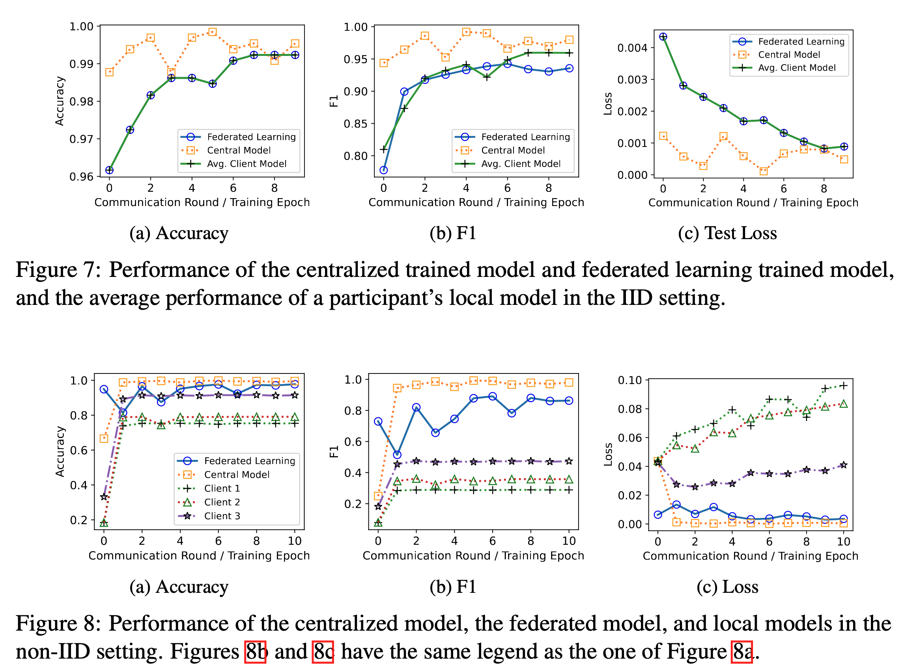

Introduction
Cybersecurity is becoming increasingly important in today’s digital landscape, and malicious URLs are one of the most common ways for attackers to compromise user systems. Traditionally, to buil a malicious URL detection model, a large amount of user data needs to be collected and stored at a centarlized server, which poses a significant privacy risk, especially for agencies with highly sensitive information, like banks. Despite the fact that individual users can create their own URL classifiers using their own data, the performance of these classifiers is often unsatisfactory due to the limited amount of data available to each user. Federated learning is a technique that enables users to collaboratively create a classifier that utilizes their large datasets while also prevsering data privacy.
In this project, we demonstrate the use of federated learning and transformers for malicious URL detection using the popuarly used Flower and Hugging Face Transformers libraries.
Federated Learning
Federated learning (McMahan et al. 2017) provides a solution to this problem by enabling multiple devices (also named as participants) to collaboratively train a model without sharing their raw data. In particular, federated learning is a distributed machine learning approach that enables multiple devices to collaboratively train a model without sharing their raw data. In this way, federated learning preserves the privacy of each device’s data while still allowing for the development of a robust model.
The figure below demonstrate an example of federated learning. The central server maintains a machine learning model. It’s important to note that the model structure is common knowledge among the devices. During each epoch of model training, the central server sends the current model parameters to the devices. The devices then use these parameters to create their local models, which they train using their own local data. Once the local models have been trained, the devices send their updated model parameters back to the central server. The central server aggregates the updated parameters from all devices and uses them to update the global model.
The arrows in the figure connecting the devices to the server represent the exchange of model updates or parameters between the devices and the central server. This exchange is a critical component of federated learning, as it allows each device to contribute its own data and knowledge to the overall model without revealing its raw data to other devices or the central server. By training the model collaboratively in this way, federated learning can achieve high levels of accuracy while preserving the privacy of individual user data.
|  |
|---|
| Image source |
If you are ready, here we go to the implentation!
Implementation
The project consists of three major components.
client.pyincludes functions and classes used by clients for local model training.server.pyincludes functions and classes used by the central server for model parameter aggregation.util.pyincludes utility functions.
The code for the project, along with installation instructions for the required libraries, is available on GitHub Source Code.
In the following sections, first, I’ll introduce the client implementations, followed by the server implementations. Then, I’ll discuss the utility functions. Finally, I’ll explain how to run the federated learning process.
Client
The Client interface serves as the primary means of communication between the central server and clients. To reduce computation and communication cost, only a subset of clients are selected for model training during each epoch (also known as a communication round). The central server sends the parameters of the global model and the training instructions to the selected clients over the network. The selected clients then perform model training and evaluation using their local data and send the updated model parameters back to the central server.
class MalURLClient(fl.client.NumPyClient):
def __init__(self, cid: str,
net: torch.nn.Module,
trainloader: DataLoader,
valloader: DataLoader,
epoch: int) -> None:
"""
Initializes the class with the specified parameters.
Parameters
----------
cid : str
A string representing the ID of the class.
net : torch.nn.Module
The neural network to use in the class.
trainloader : DataLoader
The data loader for the training set.
valloader : DataLoader
The data loader for the validation set.
epoch : int
The number of epochs to train for.
Returns
-------
None
"""
self.net = net
self.trainloader = trainloader
self.valloader = valloader
self.cid = cid
self.epoch = epoch
# Other necessary functions, which will be introduced belowImplementing Client interface typically involves defining the following methods (although set_parameters is optional): get_parameters, set_parameters, fit, and evaluate. Here, we have the implementation details of the four functions
get_parameters: return the model weight as a list of NumPy ndarrays
def get_parameters(self, config: dict) -> List[np.ndarray]:
"""
Returns a list of the parameters of the neural network in the class.
Parameters
----------
config : dict
A dictionary containing configuration parameters.
Returns
-------
List[np.ndarray]
A list of numpy arrays containing the parameters of the neural network.
"""
return [val.cpu().numpy() for _, val in self.net.state_dict().items()]set_parameters: update the local model weights with the parameters received from the server
def set_parameters(net: nn.Module, parameters: List[torch.Tensor]) -> nn.Module:
"""
Sets the parameters of a PyTorch neural network module to the specified tensors.
Parameters
----------
net: nn.Module
The neural network module to set the parameters for.
parameters: List[torch.Tensor]
The list of tensors to set the parameters of the neural network module to.
Returns
-------
nn.Module
The neural network module with updated parameters.
"""
params_dict = zip(net.state_dict().keys(), parameters)
state_dict = OrderedDict({k: torch.Tensor(v) for k, v in params_dict})
net.load_state_dict(state_dict, strict=True)
return netfit: performs four operations 1. set the local model weights 2. train the local model 3. receive the updated local model weights
def fit(self, parameters, config):
"""
Parameters
----------
parameters:
The model parameters received from the central server.
config:
Configuration parameters which allow the
server to influence training on the client. It can be used to communicate arbitrary values from the server to the client,
for example, to set the number of (local) training epochs.
Returns
-------
parameters:
The locally updated model parameters.
num_examples:
The number of examples used for training.
metrics:
A dictionary mapping arbitrary string keys to values of type
bool, bytes, float, int, or str. It can be used to communicate
arbitrary values back to the server.
"""
set_parameters(self.net, parameters)
print("Training Started...")
# train_client function train the local model using the client' local dataset.
# train_client function is defined in the utility file
train(self.net, self.trainloader, epochs=self.epoch)
print("Training Finished.")
return self.get_parameters(config), len(self.trainloader), {}evaluate: evaluate the global model on the client’s local dataset
def evaluate(self, parameters, config):
"""
Evaluate the provided parameters using the locally held dataset.
Parameters
----------
parameters :
The current (global) model parameters.
config :
Same as the config in fit function.
Returns
-------
loss :
The evaluation loss of the model on the local dataset.
num_examples :
The number of examples used for evaluation.
metrics :
A dictionary mapping arbitrary string keys to values of
type bool, bytes, float, int, or str. It can be used to
communicate arbitrary values back to the server.
"""
self.net = set_parameters(self.net, parameters)
# test function is defined in the utility file.
valid_loss, valid_accuracy, valid_f1 = test(self.net, self.valloader)
metrics = {
"valid_accuracy": float(valid_accuracy),
"valid_loss": float(valid_loss),
'valid_f1': float(valid_f1),
}
return float(valid_loss), len(self.valloader), metricsServer
Now that we have a way to instantiate clients, we need to create our server in order to aggregate the results. Using Flower, this can be done very easily by first choosing a strategy. A stratey is about how the central server update the global model using the model updates aggregated from the clients. In this project, we adopt the celebrated FedAvg, which will define the global weights as the average of all the clients’ weights at each round.
It is very important to decide how to evaluate the learned model. In federated learning, two types of evaluations are commonly used, namely, centarlize evaluation and federated evaluation. The two evaluation methods can be used at the same time.
Centralized Evaluation (or server-side evaluation): it works similarly to evaluation in centralized machine learning. If there’s a server-side dataset available, we can use it to evaluate the newly aggregated model after each round of training.
Federated evaluation (or client-side evaluation): the central server sends the newly aggregated model to a set of selected clients. Each client then evaluates the model on its local dataset and sends the evaluation metrics back to the central server. The central server aggregated the received the metrics, such as by taking the average, as the evaluation metric.
Federated evaluation is more powerful than centralized evaluation because it allows for evaluation over a larger set of data, which often leads to more realistic evaluation results. However, federated evaluation is more complex and requires caution. Since in each epoch, a subset of clients are randomly selected for model evaluation, the evaluation clients can change over consecutive rounds of learning, leading to unstable evaluation results even if the model remains unchanged.
We can mitigate the issue by selecting all clients for evaluation for stable evaluation, however, this results in large communication and computation cost, especially there are hundreds of or thousands of clients participating in the federated learning.
Next, let’s implement our server using the FedAvg strategy provided by Flower.
evaluate: the centralized evaluation function, which will be called by the server after every epoch of federated learning.
def get_evaluate_fn(net: torch.nn.Module, testloader: DataLoader) -> Callable[[int, Any, dict], Tuple[float, dict]]:
"""
Return an evaluation function for centralized evaluation.
Parameters
----------
net : torch.nn.Module
The model to be evaluated.
testloader : DataLoader
The dataset loader.
Returns
-------
Callable[[int, Any, dict], Tuple[float, dict]]
A function that evaluates the model on the given test data and returns the evaluation loss and metrics.
"""
def evaluate(server_round: int, parameters: Any, config: dict) -> Tuple[float, dict]:
"""
Evaluate the model on the given test data and return the evaluation loss and metrics.
Parameters
----------
server_round : int
The current epoch of federated learning.
parameters : Any
The current (global) model parameters.
config : dict
Same as the config in fit.
Returns
-------
Tuple[float, dict]
A tuple containing the evaluation loss and a dictionary of evaluation metrics.
"""
set_parameters(net, parameters) # 'net' is the global model. Update model with the latest parameters
loss, accuracy, f1 = test(net, testloader)
return loss, {"accuracy": accuracy, 'f1': f1}
return evaluateweighted_average: metric aggregation used by federated evaluation.
def weighted_average(metrics: List[Tuple[int, Metrics]]) -> Metrics:
"""
Multiply accuracy of each client by number of examples used.
Aggregate and return custom metric (weighted average).
Parameters
----------
metrics: List[Tuple[int, Metrics]]
The list of local evaluation metrics sent by clients.
metrics[idx] is the evaluation sent by the `idx` evaluation client.
metrics[idx][0] is the number of records of the corresponding client.
metrics[idx][1] is the evaluation metrics of the corresponding clients.
Returns
-------
weight_metrics: Metrics
The weighted average of the federated evaluation.
"""
weight_metrics = {}
for metric_name in metrics[0][1].keys():
for num_examples, m in metrics:
metric = [num_examples * m[metric_name] for num_examples, m in metrics]
examples = [num_examples for num_examples, _ in metrics]
weight_metrics[metric_name] = sum(metric) / sum(examples)
return weight_metricsNow, we are ready to create a FedAvg stretegy using the above defined federated and centralized evaluation functions.
strategy = fl.server.strategy.FedAvg(
fraction_fit = 2/NUM_CLIENTS, # Sample 2 available clients for training in each epoch
evaluate_metrics_aggregation_fn = weighted_average, # Use weighted average function to aggregate the local evaluation metrics of clients.
fraction_evaluate = 2/NUM_CLIENTS, # Sample 2 available clients for model evaluation
evaluate_fn=get_evaluate_fn(net, testloader) # Pass the evaluation function
)Utility Functions
Great work! We’re halfway through our journey. In this section, we’ll implement some helper functions, including a data split function and model training and evaluation functions. Let’s get started!
The distributions of the local datasets held by clients can have a significant impact on the performance of the collaboratively trained model in federated learning. This is because federated learning relies on stochastic gradient descent (SGD), and the independent and identically distributed (IID) sampling of the training data is important to ensure that the stochastic gradient is an unbiased estimate of the full gradient (Zhao et al. 2018).
To investigate the impact of local data distribution on the performance of the global model, we conducted experiments using two different methods to generate clients’ local data, that is, IID data generation and non-IID data generation.
prepare_train_test_even: partition the dataset into the local training data of clients, and a server side testing data.
def _train_test_split(local_data: Dataset) -> DatasetDict:
"""
This function splits a given local dataset of a client into training and validation datasets.
Parameters
----------
loca_data (Dataset):
The local dataset of a client to be split.
Returns
-------
data_dict (DatasetDict):
The training and validation datasets of the client.
"""
train_val_client_split = local_data.train_test_split(test_size=0.2, seed=RANDOM_SEEDS) # 80% local training data, 20% local validation data
data_dict = DatasetDict({
'train': train_val_client_split['train'],
'validation': train_val_client_split['test'],
})
return data_dict
def prepare_train_test_iid(raw_datasets: Dataset, num_clients: int) -> Tuple[List[DatasetDict], Dataset]:
"""
Prepares the training and testing datasets for a federated learning scenario where the data is partitioned across
multiple clients in an IID (Independent and Identically Distributed) manner.
Parameters
----------
raw_datasets: Dataset
The raw dataset containing the URLs and their corresponding labels.
Returns
-------
client_datasets: List[DatasetDict]
A list of datasets for each client, each containing the training and validation subsets.
server_test_dataset: Dataset
The dataset used by the central server for central evaluation.
"""
train_test_split = raw_datasets.train_test_split(test_size=0.2, seed=42)
client_dataset = train_test_split['train']
server_test_dataset = train_test_split['test']
partition_size = len(client_dataset) // num_clients # `num_clients` is the total number of clients in the federated learning process. `partition_size` is the number of records in each client's local data.
client_datasets = []
for _ in range(num_clients):
client_split = client_dataset.train_test_split(train_size=partition_size)
client_dataset = client_split['test'] # The remaining data will be divided among the other clients.
client_datasets.append(_train_test_split(client_split['train']))
return client_datasets, server_test_datasetprepare_train_test_noniid: generate label-based non-IID distributed local datasets for clients. Assume we are working on a multi-class classification problem. A client is only assigned records from two specified categories in the dataset. For example, consider that we are working on a malicious URLs detection problem, where there are four categories, namely, benign, malicious, phishing, and defacement URLs. The first client will only have records from benign and phishing categories, the second client will only have records from benign and malicous categories, and the third client will only have records from benign and defacement categories.
def prepare_train_test_noniid(raw_datasets: Dataset, num_clients: int) -> Tuple[List[DatasetDict], Dataset]:
"""
Prepares the training and testing datasets for a federated learning scenario where the data is partitioned across
multiple clients in a non-IID (Non-Independent and Identically Distributed) manner.
Parameters
----------
raw_datasets: Dataset
The raw dataset containing the URLs and their corresponding labels.
num_clients: int
The total number of clients in the federated learning process.
Returns
-------
client_datasets: List[DatasetDict]
A list of datasets for each client, each containing the training and validation subsets.
server_test_dataset: Dataset
The dataset used by the central server for central evaluation.
"""
train_test_split = raw_datasets.train_test_split(test_size=0.2, seed=42)
clients_dataset, server_test_dataset = train_test_split['train'], train_test_split['test']
# label_id 0: benign
# label_id 1: malicious
# label_id 2: phishing
# label_id 3: defacement
whole_benign = clients_dataset.filter(lambda x: x['labels'] == 0)
benign_size_per_client = len(whole_benign) // num_clients
client_datasets = []
# Class 0 is benign
for cid in range(num_clients):
abnormal_urls = clients_dataset.filter(lambda x: x['labels'] == (cid + 1))
client_split = whole_benign.train_test_split(train_size=benign_size_per_client, seed=42)
local_benign, whole_benign = client_split['train'], client_split['test']
local_dataset = concatenate_datasets([local_benign, abnormal_urls])
client_datasets.append(_train_test_split(local_dataset))
return client_datasets, server_test_datasetFor this project, we constructed our classifier using the pre-trained BERT model. To prepare the input data for the model, we used the tokenize function of BERT to tokenize each URL into a sequence of tokens compatible with the BERT model. We iterate the datasets generated from the above functions, and tokenize the datasets. The tokenizer is also provided by the HuggingFace Transformers library. In particular, tokenizer = AutoTokenizer.from_pretrained(CHECKPOINT)
def tokenize_function(record):
return tokenizer(record["url"], truncation=True, padding=True)
for client_dataset in client_datasets:
tokenized_datasets = (client_dataset
.map(tokenize_function, batched=True)
.remove_columns("url"))
# The main purpose of DataCollatorWithPadding is to dynamically pad input sequences in a batch with the padding token to match the longest sequence in that batch.
data_collator = DataCollatorWithPadding(tokenizer=tokenizer)
# Wrap the tokenized dataset as DataLoader
trainloader = DataLoader(
tokenized_datasets["train"],
shuffle=True,
batch_size=BATCH_SIZE,
collate_fn=data_collator,
)
# Wrap test and validation dataset as DataLoader, ....After prepraing our datasets, next step is to define our model. For this project, we build our classifier based on the pre-trained BERT model, which can be easily implemented using the API provided by HuggingFace Transformers.
The created model instance net consists of a pre-trained distilled BERT model and a linear layer for sequence label prediction.
def init_model(num_labels: int, fine_tune: bool = True) -> torch.nn.Module:
"""
Initialize a BERT based sequence classifier.
Parameters
----------
num_labels:
The number of classes the model should predict.
fine_tune:
If we want to fine tune the parameters of the pre-trained BERT model.
Returns
-------
net:
A BERT-based sequence classifier model with the specified number of labels.
"""
net = AutoModelForSequenceClassification.from_pretrained(CHECKPOINT, num_labels=num_labels).to(DEVICE)
if fine_tune == False:
for name, param in net.named_parameters():
if name.startswith("bert"): # choose whatever you like here
param.requires_grad = False
net.train()
return netWe are almost done with our implementation. The final step is to implement the training function to train our model.
def train(net: nn.Module, trainloader: DataLoader, epochs: int) -> None:
"""
Train the given neural network for the specified number of epochs using the given data loader.
Parameters
----------
net : nn.Module
The neural network to train.
trainloader : DataLoader
The data loader containing the training data.
epochs : int
The number of epochs to train for.
Returns
-------
None
"""
optimizer = AdamW(net.parameters(), lr=5e-5)
for _ in tqdm.tqdm(range(epochs), desc='epoch'):
net.train()
total_loss = 0
for batch in tqdm.tqdm(trainloader, desc='iterate data'):
batch = {k: v.to(DEVICE) for k, v in batch.items()}
outputs = net(**batch)
logits = outputs.get("logits")
loss_fct = nn.CrossEntropyLoss(
weight=torch.tensor([1.0, 10.0, 10.0, 10.0],
device=DEVICE)
)
labels = batch.get("labels")
loss = loss_fct(logits.view(-1, NUM_LABELS), labels.view(-1))
loss.backward()
optimizer.step()
optimizer.zero_grad()
total_loss += loss.item()
torch.cuda.empty_cache()Execution
Now that we have completed the implementation of our federated learning system, it’s time to put it to the test. Now that we have completed the implementation of our federated learning system, it’s time to put it to the test. Consider we aim to simulate a federated learning system with 10 clients on a single machine. Flower provides two ways to run the system: (1) Flower launches 10 instances of FlowerClient on different machines or servers; (2) Flower offers a way to simulate a federated learning system with multiple clients on a single machine by creating FlowerClient instances only when necessary for training or evaluation. This helps prevent memory exhaustion. To enable this function, we need to implement a client_fn function that creates a FlowerClient instance on demand.
def get_client_fn(client_dataloaders):
"""
Return the function to create a client
Parameters
----------
client_dataloaders:
Dataloader of the training data of all clients
"""
def client_fn(cid):
"""
Create a client instance
Parameters
-----------
cid:
The client ID
"""
return MalURLClient(cid, net, client_dataloaders[int(cid)]['train'], client_dataloaders[int(cid)]['validation'], testloader)
return client_fnIn this project, we focus on the second option of simulation. To start the simulatoin, we only a simple call the build-in function start_simulation.
Data and Experiment Results
We conduct experiments using a public benchmark dataset for abnormal URL detection. Some statistics of the dataset is shown in the following table.
| Category | Count | Ratio |
|---|---|---|
| benign | 47,766 | 73.36% |
| defacement | 11,899 | 18.28% |
| phishing | 3,884 | 5.97% |
| malware | 1,561 | 2.40% |
In each experiment, we perform ten communication rounds. By default, there are ten participants, and two participants are selected for model training per round. The selected participants execute one epoch of training on their local models.
The model performance on the IID and non-IID settings are shown in the figure below. We compare the performance of federated training to centralized and local training. To get a comprehensive view of the performance of federated training, for each client, we train a local model by using its local data alone. By comparing the performance of a local model and the federated model, we can study how much performance benefit a worker can achieve by participating in federated learning.
|  |
|---|
| Experiment Results |
The results of our experiments yield two important observations. Firstly, in the IID setting, the federated learning framework enables participants to collaboratively train malicious URL detectors with performance comparable to that of centralized trained classifiers. However, the performance improvement compared to local models is marginal. Secondly, in the non-IID setting, the three local models exhibit the worst performance. This is because the workers only have one type of malicious URLs in their training datasets, and their models cannot generalize to detect other types of malicious URLs. The results suggest that in the non-IID setting, clients can benefit significantly from collaborative training of malicious URL detectors with others, leading to significant performance improvements.